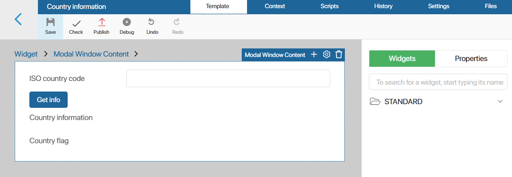

В пользовательском модуле можно настроить подключение веб-сервиса, использующего протокол SOAP (Simple Object Access Protocol), для обмена данными с ELMA365.
Веб-сервис будет выступать в качестве точки-коннектора. В модуле загружается .xml-файл спецификации определённого веб-сервиса. Это позволит получить доступ к его языку описания (WSDL). Затем вы сможете обращаться к методам и типам данных веб-сервиса в серверных скриптах и использовать их для решения задач в ELMA365.
Например, в модуле можно настроить интеграцию с веб-сервисом, который предоставляет данные о стране по её ISO-коду. Для использования методов сервиса, можно создать виджет и добавить в него серверный скрипт. Пользователь сможет указывать в виджете ISO-код страны и отправлять запрос в веб-сервис. Полученные данные о стране будут направляться в ELMA365 и отображаться в виджете. Далее виджет можно разместить на любых страницах и формах приложений системы и получать информацию из веб-сервиса.
Для настройки интеграции в пользовательском модуле создаётся Внешний сервис.
начало внимание
Добавлять внешние сервисы в модули могут только администраторы системы.
конец внимание
Создать внешний сервис в модуле
Чтобы подключить веб-сервис к ELMA365, выполните следующие действия:
- Перейдите в раздел Администрирование > Модули и выберите созданный пользовательский модуль.
- На странице модуля нажмите Управление и перейдите на вкладку Внешние сервисы.
- Заполните данные для подключения:
- Имя* — укажите название внешнего сервиса;
- Уникальное имя* — укажите название, которое будет использоваться в скриптах для обращения к внешнему сервису. Оно должно быть уникальным;
- URL спецификации — внесите URL-адрес, по которому доступна .xml-таблица с языком описания сервиса (WSDL). Для загрузки спецификации в систему нажмите значок
 справа от поля. После этого сформируется и отобразится в поле файл спецификации;
справа от поля. После этого сформируется и отобразится в поле файл спецификации; - Файл спецификации* — в поле загружается .xml-файл спецификации веб-сервиса. Если в предыдущем поле вы ввели URL-адрес, файл отобразится автоматически;
- SOAP сервис, SOAP порт — поля заполняются автоматически из данных загруженного .xml-файла спецификации веб-сервиса. Данные используются для отладки взаимодействия с веб-сервисом. Если в поле отображается несколько SOAP портов, выберите нужный, обратившись к документации веб-сервиса;
- Базовый URL — укажите URL-адрес веб-сервиса. Если поле не заполнено, по умолчанию используется адрес из загруженного .xml-файла спецификации;
- Аутентификация — выберите опцию для аутентификации веб-сервиса:
- Не требуется;
- Базовая — для аутентификации используется логин и пароль;
- По токену — для аутентификации необходим токен.
Чтобы указать логин и пароль или токен, нажмите на значок ключа справа от поля. Обратите внимание, при экспорте модуля данные передаются в открытом виде.
Чтобы зашифровать конфиденциальные данные, рекомендуем использовать шаблонизированные переменные, т. е. параметры, созданные в настройках модуля. Для этого в правой части поля нажмите значок {+}, выберите добавленный параметр и сохраните настройки.
Например, на странице Настройки модуля вы можете создать параметр Токен с типом Строка. Затем при добавлении внешнего сервиса указать переменную в правиле аутентификации. Тогда токен можно внести, изменить или удалить в настройках включённого модуля.
- Нажмите Создать.
- Откроется окно с полными настройками внешнего сервиса. Чтобы предоставить доступ к сервису, на верхней панели нажмите Сохранить и Опубликовать.
Теперь вы можете использовать доступные методы веб-сервиса, описанные в его документации.
Обращаться к методам можно только в серверных скриптах, которые обрабатываются на стороне сервера ELMA365.
Для удобства вы можете добавить скрипты в рамках существующего модуля, например, в пользовательских виджетах или действиях в бизнес-процессах. Созданные компоненты с серверными скриптами могут применяться в любых разделах ELMA365, но выполняются только при включённом пользовательском модуле.
Пример использования методов внешнего сервиса
Рассмотрим использование внешнего сервиса в модуле на примере настроенной интеграции с веб-сервисом, который предоставляет данные о стране по её ISO-коду. Язык описания сервиса (WSDL) доступен для ознакомления и использования по URL спецификации.
В модуле создадим и настроим виджет, в котором пользователь указывает ISO-код страны и нажимает кнопку запуска скрипта. В скрипте используется метод из веб-сервиса. После обработки запроса в виджете в ELMA365 отображается полная информация о стране: название, столица, телефонный код и код валюты, государственные языки, флаг.
Чтобы пользователи могли применять виджет, разместим его на отдельной странице, добавленной в разделе системы.
Рассмотрим действия, которые выполняются для подобной настройки.
Шаг 1. Создание виджета в модуле и настройка его контекста
- Перейдите в настройки пользовательского модуля и откройте вкладку Виджеты.
- Нажмите + Виджет, задайте название виджета, например, Данные страны и нажмите Создать. Откроется дизайнер интерфейсов.
- Создайте контекстные переменные, которые размещаются на поле для моделирования и используются для обмена данными между ELMA365 и веб-сервисом. Для этого перейдите на вкладку Контекст и добавьте свойства:

- ISO-код страны (
isocode) — переменная с типом Строка (строка). В виджете в этом поле пользователи будут указывать ISO-код страны; - Данные о стране (
countryinfo) — переменная с типом Строка (текст). После обработки запроса в веб-сервис в этом поле будет отображаться полная информация о стране; - Флаг страны (
flag) — переменная с типом Изображение (одно). В этом поле будет показываться изображение флага, полученное из ссылки на него в ответе от веб-сервиса.
Шаг 2. Размещение свойств на форме виджета
Добавьте свойства в виджет, чтобы пользователи могли указывать ISO-код стран и просматривать данные о ней, полученные в результате обработки запроса в веб-сервис. Для этого:
- Перейдите на вкладку Шаблон и на правой боковой панели нажмите Свойства.
- Перетащите созданные переменные на поле для моделирования.
- Для свойств, отображающих результат запроса — Данные о стране и Флаг страны, рекомендуем включить опцию Только для чтения, чтобы пользователи не могли изменять полученные значения.
Шаг 3. Настройка серверного скрипта
Задайте серверный скрипт, который будет обрабатывать метод из веб-сервиса, и настройте его запуск. Для этого:
- На боковой панели дизайнера нажмите Виджеты, найдите виджет Кнопка и перетащите его на поле для моделирования, например, разместите кнопку под строкой ISO-код страны.
- В открывшемся окне настройте отображение кнопки и задайте её название, например, Получить данные.
- В поле Выполняемый скрипт выберите опцию Сервер, чтобы добавить скрипт, который обрабатывается на стороне сервера ELMA365. Нажмите Создать и укажите название скрипта, который будет запускаться при нажатии на кнопку, например, Show.

- Нажмите на появившуюся в поле кнопку Открыть, чтобы перейти на вкладку Скрипты и задать следующий скрипт:
async function Show(): Promise<void> {
Context.data.countryinfo = '';
Context.data.flag = undefined;
if (!Context.data.isocode) {
return;
}
const mysCountryISOCode = Context.data.isocode;
try {
// Обращение к созданному в модуле внешнему сервису
const countryinfoservice = Namespace.ws?.countryinfoservice();
if (countryinfoservice) {
// Вызов метода получения полных данных по стране из внешнего сервиса
const result = await countryinfoservice.FullCountryInfo({
sCountryISOCode: mysCountryISOCode
});
if (result && result.data && result.data.FullCountryInfoResult) {
const countryInfo = result.data.FullCountryInfoResult;
// Проверка наличия языков и их свойств перед отображением
const languages = countryInfo.Languages?.tLanguage
? countryInfo.Languages.tLanguage
.filter(lang => lang.sName && lang.sISOCode)
// Фильтрация результата, чтобы учесть только те языки, для которых в сервисе есть название страны и ISO-код
.map(lang => `${lang.sName} (${lang.sISOCode})`)
.join(", ")
: "Информация о языках недоступна";
// Генерация форматированного результата
const formattedResult = `
Полная информация о стране с ISO Code "${mysCountryISOCode}":
Название: ${countryInfo.sName}
Код страны: ${countryInfo.sISOCode}
Столица: ${countryInfo.sCapitalCity}
Телефонный код: +${countryInfo.sPhoneCode}
Континент: ${countryInfo.sContinentCode}
Код валюты: ${countryInfo.sCurrencyISOCode}
Флаг страны: ${countryInfo.sCountryFlag}
Языки: ${languages}
`;
Context.data.countryinfo += formattedResult;
// Загрузка изображения флага по полученной из сервиса ссылке
const newFlag = await Context.fields.flag.createFromLink(`flagOf${mysCountryISOCode}.jpg`, countryInfo.sCountryFlag!);
Context.data.flag = newFlag;
}
}
} catch (error) {
}
}
Шаг 4. Публикация настроенного виджета
После настройки виджет в дизайнере интерфейсов может выглядеть следующим образом:

Чтобы он стал доступен для использования, нажмите Сохранить и Опубликовать на верхней панели дизайнера интерфейсов.
Шаг 5. Добавление виджета на страницу
После публикации виджета его можно размещать на страницах и формах приложений системы. Для этого:
- Убедитесь, что пользовательский модуль, в котором создан виджет, включён.
- Перейдите в любой раздел и создайте новую страницу.
- Откройте страницу в дизайнере интерфейсов.
- На вкладке Шаблон в списке виджетов найдите созданный в модуле виджет Данные страны и перетащите его на поле для моделирования.
- Сохраните и опубликуйте страницу.
На готовой странице с виджетом пользователи смогут вводить стандартизированные ISO-коды стран и получать полную информацию о них из веб-сервиса.